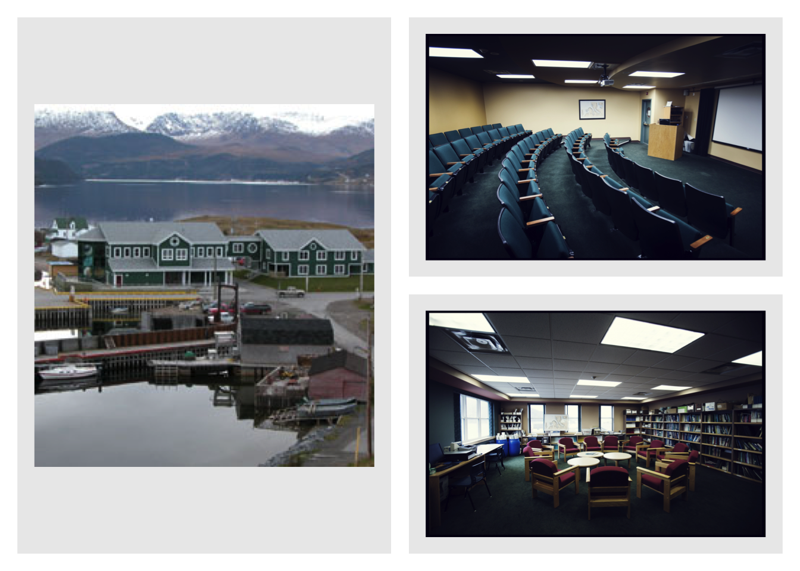

2023 AARMS-EIDM Summer School

The AARMS-EIDM Summer School took place at Bonne Bay Marine Station Photo credit, August 19 to 31, 2023.
{kind=link}
To learn more about the summer school, here is a report by Francisca Olajide and a CBC Newfoundland Morning interview with Dr. Amy Hurford.
Instructors
Dr. Amy Hurford, Memorial University (Organizer, email: ahurford@mun.ca)
Dr. Julien Arino, University of Manitoba
Dr. Amy Greer, University of Guelph
Dr. Jane Heffernan, York University
Dr. James Watmough, University of New Brunswick
Recordings are available here.
Guest lecturers
Dr. Bouchra Nasri, Universite de Montreal
Dr. Steve Walker, McMaster University
Dr. Brenda Wilson, Memorial University
Dr. Edward Thommes, Sanofi Pasteur
Funding
The summer school is supported by the Atlantic Association for Research in the Mathematical Sciences, Mathematics for Public Health, the Canadian Network for Modelling Infectious Diseases, the One Health Modelling Network for Emerging Infections, Memorial University, and the Canadian Centre for Disease Modelling.